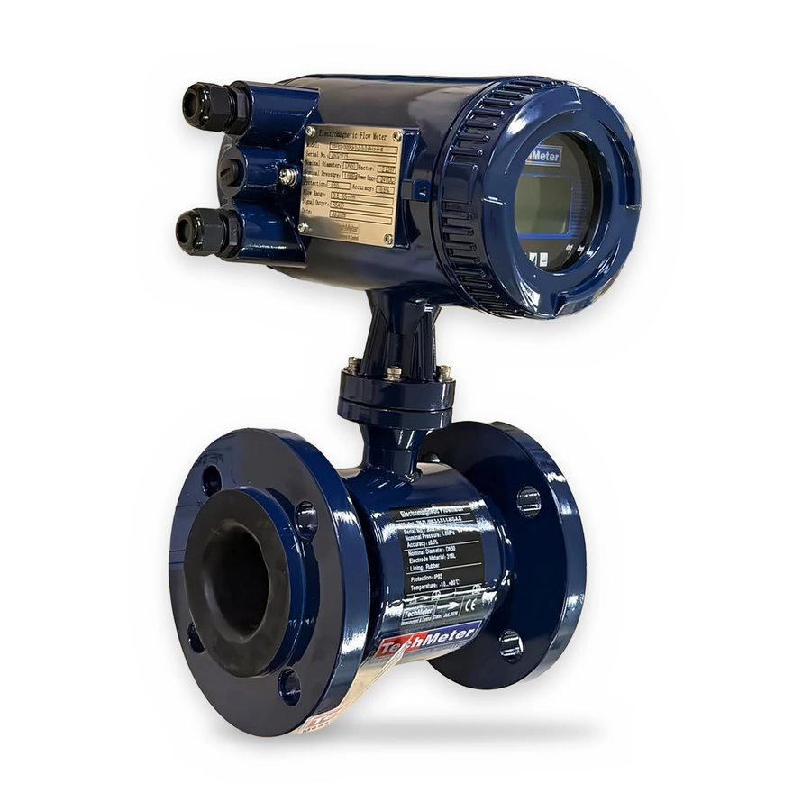
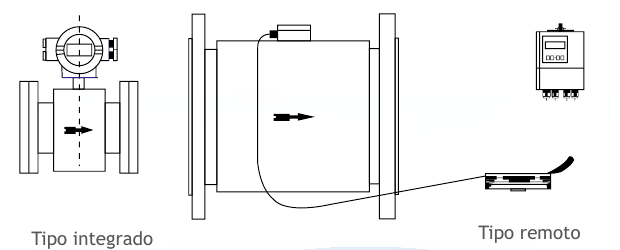
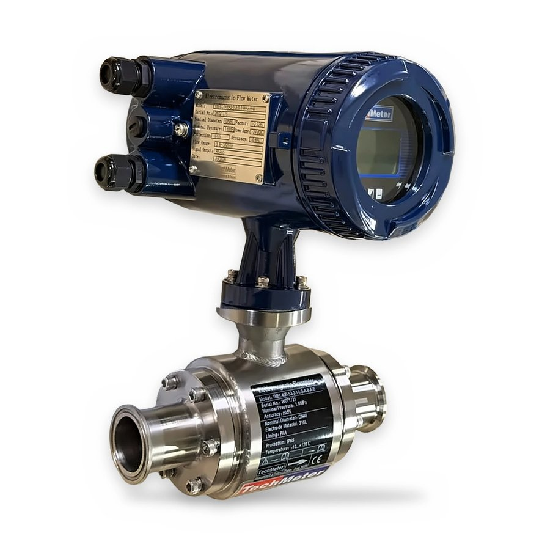

Escolha o seu modelo
O modelo está na plaqueta do equipamento e na etiqueta do QR code.

TM-EL IntegradoSensor flangeado com o conversor montado sobre o tubo. Display e teclas no próprio equipamento.

TM-EL RemotoSensor flangeado com o conversor separado, ligado por cabo. Indicado para locais de difícil acesso ou alagáveis.

TMTC Tri-ClampConexão tri-clamp para as indústrias de alimentos, bebidas e farmacêutica.
TMWF WaferCorpo wafer, montado entre flanges da tubulação. Compacto e leve.